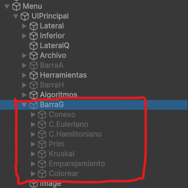
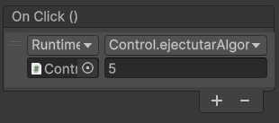
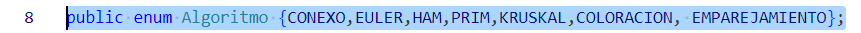
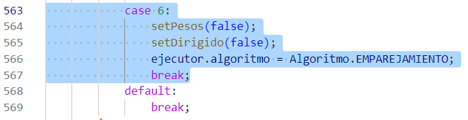

Este documento es lo que sirve de guía para poder implementar cualquier nueva funcionalidad para el editor de grafos de Matemática Discreta, en concreto la implementación de nuevos algoritmos, que he intentando que sea lo más sencillo posible. Dicho esto, voy a detallar lo relacionado a implementar nuevos algoritmos, comenzando por lo esencial y terminando por dar algunos consejos a tener en cuenta.
Para empezar a desarrollar un nuevo algoritmo, simplemente tienes que hacer los siguientes pasos para que el programa lo pueda detecta y ejecutar:


En el script de Control de control, realizar los siguientes pasos:
Modificar el enumerado de esta línea para añadir el algoritmo que quieras implementar

En la función ejecutarAlgoritmo(), añadir en la sentencia switch-case el valor que hayas asignado al evento del botón, y poner en este caso un código parecido al siguiente:

En el script del ejecutor, realizar los siguientes pasos:
Starter() el mensaje de comienzo para tu algoritmoèjecutarPaso() un nuevo caso en la sentencia switch-caseejecutarTodo() un caso para el nuevo algoritmo que hayas implementado. Esta función está sobre todo si quieres que ocurra algo especial en el caso de que quieras ejecutarlo todo de golpe, en caso contrario solo debes copiar y pegar el código de los anteriores casos.Con esto, ya podrías implementar cualquier algoritmo. Ahora voy a pasar a explicar lo que necesitas saber del editor en general para poder manejarte en el código, además de algunas colecciones que te pueden servir de ayuda para implementar cualquier cosa.
Para el editor tienes que tener en cuenta una cosa, y es que la estructura de grafo en sí no existe, si no que es la colección de todos los nodos y aristas que existan en el entorno. Esto es muy importante, ya que obviamente si quieres todos los nodos o aristas, debes operar con reglas de Unity. En este caso, ya ofrezco la posibilidad de una colección de todos los nodos y aristas en la función èjecutarPaso() gracias a la colección nodos y aristas.
En el caso de que por lo que sea necesites esa colección para una función auxiliar, necesitarías la siguiente:
Figura [] figuras = GameObject.FindObjectsByType<Figura>(FindObjectsSortMode.None);
Donde figura en este caso significa la componente que quieras buscar en cuestión.
Otra cosa importante es ver cuáles son los atributos los cuales puedes acceder de cada componente. En este caso, los nodos tendrían esta características:
cambiaColor() a cambiar el propio valor de color a pelo. Lo segundo muy probablemente no cambiará el color del nodo.(Identificador,peso). Por ello, si quieres obtener todos los nodos adyacentes de un nodo cualquiera, se debe usar este bucle:foreach (Vector2 v in actual.adyacentes){
Nodo encontrado = null;
foreach(Nodo n in nodos){
if ((int) v.x == n.ident){
encontrado = n;
}
}
}
Para el caso de las aristas, esto serían los atributos de cada arista:
Con esto, ya se podría operar fácilmente para hacer cualquier algoritmo.
Además, el ejecutor tiene también a mano una serie de colecciones, en el caso de que se quiera usar alguna a conveniencia para implementar cualquier cosa. Serían las siguientes:
A la hora de dar explicaciones, bastaría con que en el final de cada ejecución del paso se actualice el valor de la variable texto.text con la explicación que uno quiera dar. Algo que hay que tener en cuenta claro es que se debe de tener en cuenta cada caso en el que pueda estar el algoritmo para poder dar una explicación. Con esto ya quedaría explicado.
Para que se pueda implementar cualquier algoritmo, es necesario que exista una condición de fin para que se pueda terminar el algoritmo correctamente. Esta condición es manejado con el booleano terminado, el cual en caso de que esté activado ya no se puede ejecutar ningún paso. Esta condición se puede activar cuando creas conveniente que ha terminado el algoritmo.
Dicho esto, este es el pseudocódigo general que deberías seguir en caso de que quieras implementar algo:
Si (condicion de fin){
terminado = true
}
Si no{
Si (No hay nada para empezar){
Escoger nodo o arista para empezar
}
Si no{
Escoger nodo o arista a partir de lo actual
Actualizar el grafo
}
}
Para terminar, voy a dar unos pequeños consejos a la hora de implementar un algoritmo en el editor:
Intenta que siempre, da igual el tipo de grafo, exista una condición de fin. En caso contrario, te pueden dar bucles infinitos a la hora de ejecutarlo todo de golpe
Recuerda que realmente no estoy dando ningún resultado en el grafo, si no que simplemente actualiza valores visuales. Esto significa que a menos que lo quieras mostrar en las explicaciones no lo veo necesario
Como valores a modificar de los componentes, te recomiendo que solo modifiques los nombres de los nodos y el color de los componentes. Estos son los únicos valores que se reinician a la hora de volver al editor normal, y tocar cualquier otro valor pone en riesgo la integridad de todo el grafo.
No uses la matriz de adyacencia a la hora de implementar un algoritmo. Si bien existe la opción de convertir una matriz de adyacencia en aristas, esta función modifica un montón de valores que no son deseados a la hora de ejecutar un algoritmo. Es decir, si quieres implementar un algoritmo, te recomiendo que intentes pensar más bien cómo funciona visualmente en vez copiar cualquier algoritmo en internet.